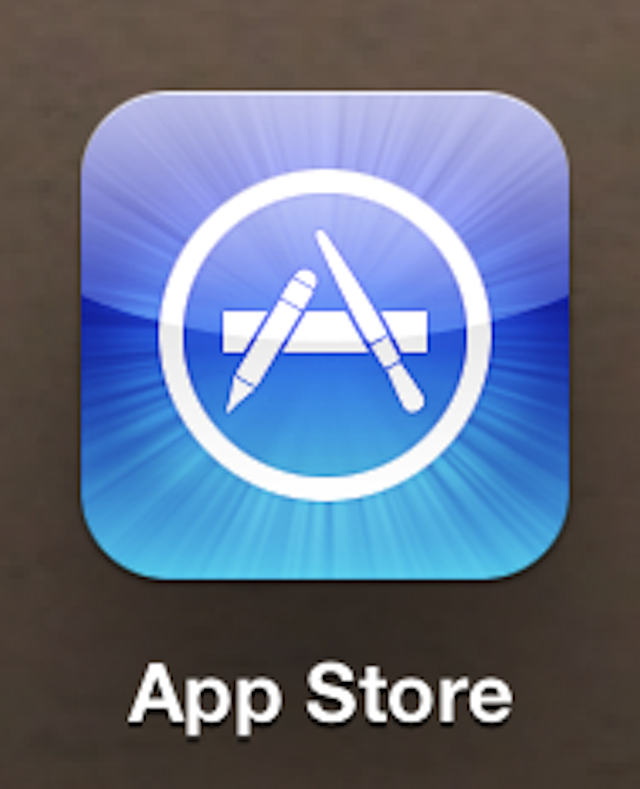

L'application recipe keeper sur votre iphone!
Recipe Keeper sur l’App Store Cette application est disponible uniquement sur l’App Store pour iPhone et iPad.
Recipe Keeper est l’organisateur de recettes, la liste de courses et le planificateur de repas tout-en-un faciles à utiliser,
disponibles sur tous vos appareils.
Entrez vos recettes avec autant ou aussi peu d’informations que vous le souhaitez.
Vos recettes sur google play

Recherchez des recettes par plans sociaux, ingrédients, besoins alimentaires, difficulté, vitesse, cuisine, etc. -
Filtrez par ce qui compte pour vous comme les aliments végétaliens, sans gluten, faibles en glucides, sains et réconfortants,
pour n’en nommer que quelques-uns.
- Ajoutez des recettes à vos goûts Tasty pour les enregistrer pour plus tard.
Votre meilleur organisateur de recettes
SideChef: Recettes + planificateur de repas iPhone Cette application dispose d’une fonctionnalité de moteur de recherche
où vous pouvez rechercher des recettes, puis vous pouvez facilement importer cette recette dans votre livre de recettes.
Ici, dans cette application,
vous êtes également autorisé à ajuster la quantité de votre recette en fonction des personnes que vous devez servir.